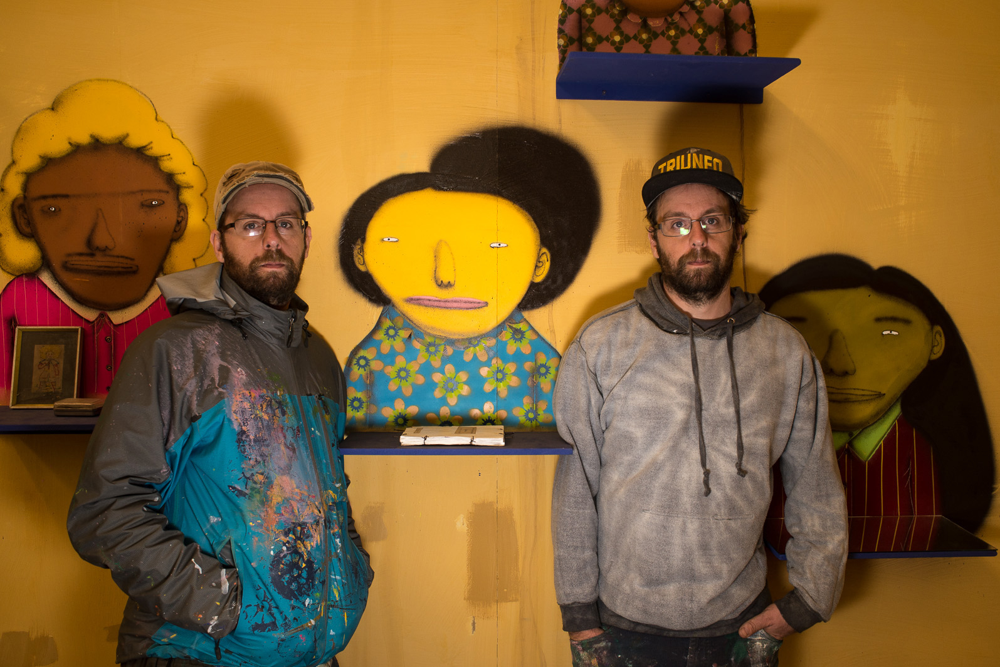
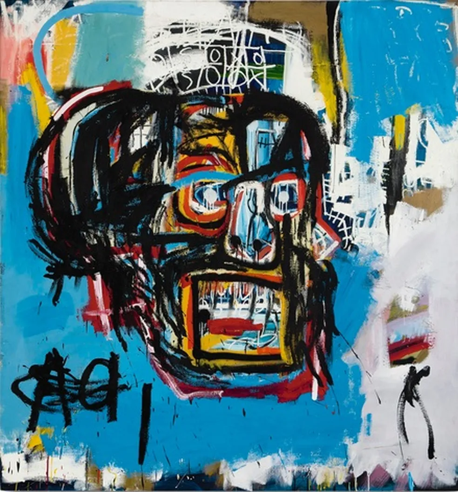
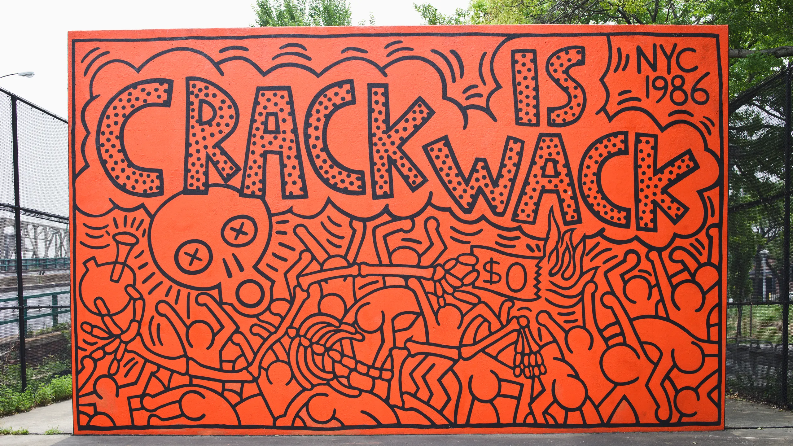

| Artista | Nacionalidade | Estilo Principal | Ano de Início |
|---|---|---|---|
| Banksy | Britânico | Stencil (Estêncil) / Sátira Política | Década de 90 |
| Os Gêmeos | Brasileiro | Grafite de Personagens / Folclore | 1987 |
| Shepard Fairey (OBEY) | Americano | Poster Art / Ilustração | 1989 |
| Eduardo Kobra | Brasileiro | Muralismo Geométrico / Cores Vibrantes | 1987 |

| Obra | Artista | Localização | Significado / Contexto |
|---|---|---|---|
| Girl with Balloon | Banksy | Londres, Reino Unido | Esperança e inocência. |
| Mural Etnias | Eduardo Kobra | Rio de Janeiro, Brasil | União dos povos e diversidade. |
| Hope | Shepard Fairey | Mundial (Campanha Obama) | Ícone de mudança política. |
| V-Day Mural | Lady Pink | Nova York, EUA | Empoderamento feminino no grafite. |

voltar ao inicio